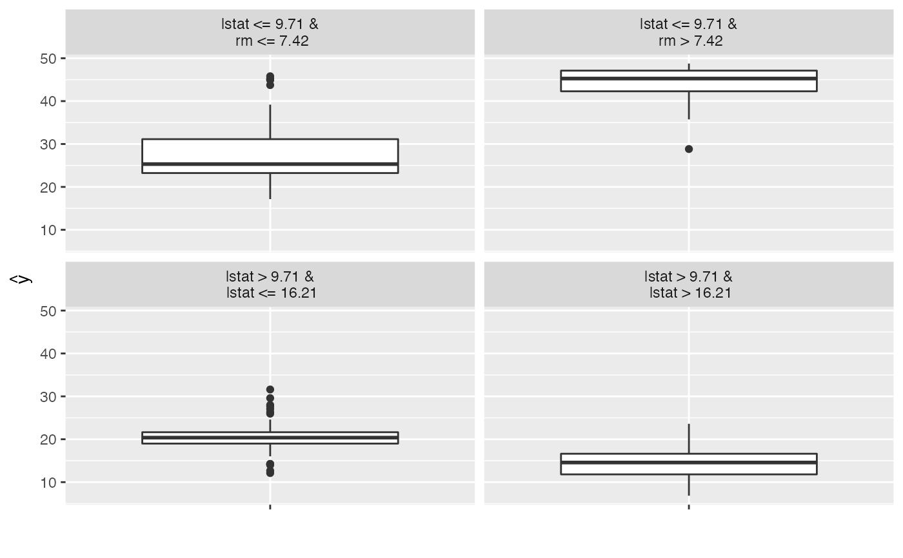
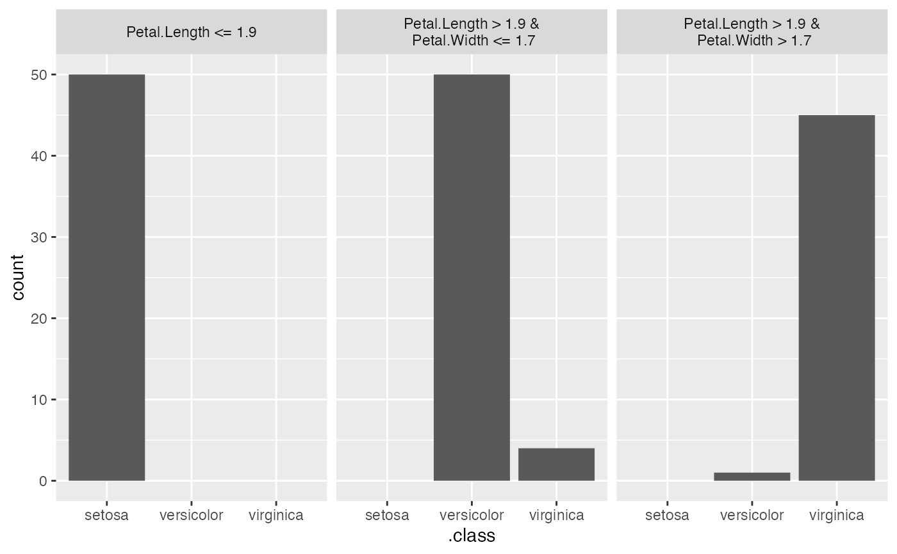
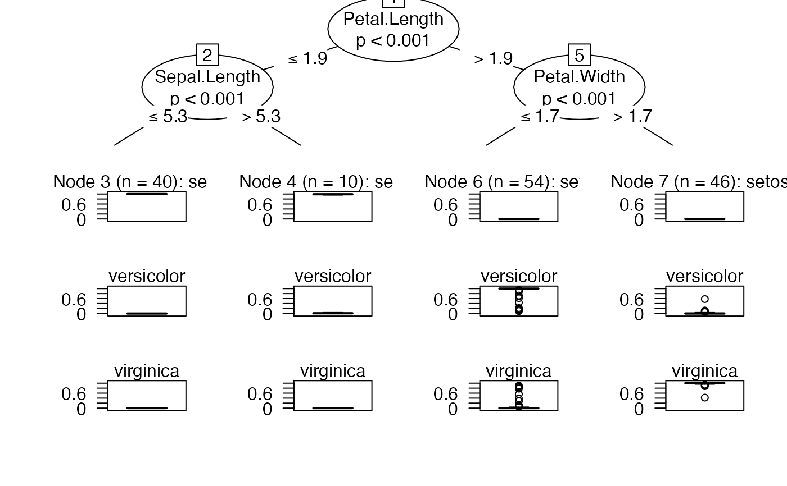

TreeSurrogate fits a decision tree on the predictions of a prediction model.
A conditional inference tree is fitted on the predicted \(\hat{y}\) from
the machine learning model and the data. The partykit package and
function are used to fit the tree. By default a tree of maximum depth of 2 is
fitted to improve interpretability.
To learn more about global surrogate models, read the Interpretable Machine Learning book: https://christophm.github.io/interpretable-ml-book/global.html
Craven, M., & Shavlik, J. W. (1996). Extracting tree-structured representations of trained networks. In Advances in neural information processing systems (pp. 24-30).
predict.TreeSurrogate plot.TreeSurrogate
For the tree implementation
partykit::ctree()
iml::InterpretationMethod -> TreeSurrogate
treeparty
The fitted tree. See also partykit::ctree.
maxdepthnumeric(1)
The maximum tree depth.
r.squarednumeric(1|n.classes)
R squared measures how well the decision tree approximates the
underlying model. It is calculated as 1 - (variance of prediction
differences / variance of black box model predictions). For the
multi-class case, r.squared contains one measure per class.
Inherited methods
new()Create a TreeSurrogate object
TreeSurrogate$new(predictor, maxdepth = 2, tree.args = NULL)predictorPredictor
The object (created with Predictor$new()) holding the machine
learning model and the data.
maxdepthnumeric(1)
The maximum depth of the tree. Default is 2.
tree.args(named list)
Further arguments for party::ctree().
predict()Predict new data with the tree. See also predict.TreeSurrogate
newdatadata.frame
Data to predict on.
typePrediction type.
...Further arguments passed to predict().
library("randomForest")
# Fit a Random Forest on the Boston housing data set
data("Boston", package = "MASS")
rf <- randomForest(medv ~ ., data = Boston, ntree = 50)
# Create a model object
mod <- Predictor$new(rf, data = Boston[-which(names(Boston) == "medv")])
# Fit a decision tree as a surrogate for the whole random forest
dt <- TreeSurrogate$new(mod)
#> Loading required package: partykit
#> Loading required package: libcoin
#> Loading required package: mvtnorm
# Plot the resulting leaf nodes
plot(dt)

# Use the tree to predict new data
predict(dt, Boston[1:10, ])
#> Warning: Dropping additional columns: medv
#> .y.hat
#> 1 25.32242
#> 2 25.32242
#> 3 37.96623
#> 4 37.96623
#> 5 37.96623
#> 6 25.32242
#> 7 20.77259
#> 8 14.89785
#> 9 14.89785
#> 10 14.89785
# Extract the results
dat <- dt$results
head(dat)
#> crim zn indus chas nox rm age dis rad tax ptratio black lstat
#> 1 0.00632 18 2.31 0 0.538 6.575 65.2 4.0900 1 296 15.3 396.90 4.98
#> 2 0.02731 0 7.07 0 0.469 6.421 78.9 4.9671 2 242 17.8 396.90 9.14
#> 3 0.02729 0 7.07 0 0.469 7.185 61.1 4.9671 2 242 17.8 392.83 4.03
#> 4 0.03237 0 2.18 0 0.458 6.998 45.8 6.0622 3 222 18.7 394.63 2.94
#> 5 0.06905 0 2.18 0 0.458 7.147 54.2 6.0622 3 222 18.7 396.90 5.33
#> 6 0.02985 0 2.18 0 0.458 6.430 58.7 6.0622 3 222 18.7 394.12 5.21
#> .node .path .y.hat .y.hat.tree
#> 1 3 lstat <= 9.71 &\n rm <= 6.939 25.66667 25.32242
#> 2 3 lstat <= 9.71 &\n rm <= 6.939 22.41060 25.32242
#> 3 4 lstat <= 9.71 &\n rm > 6.939 33.92053 37.96623
#> 4 4 lstat <= 9.71 &\n rm > 6.939 34.24689 37.96623
#> 5 4 lstat <= 9.71 &\n rm > 6.939 34.90896 37.96623
#> 6 3 lstat <= 9.71 &\n rm <= 6.939 27.61582 25.32242
# It also works for classification
rf <- randomForest(Species ~ ., data = iris, ntree = 50)
X <- iris[-which(names(iris) == "Species")]
mod <- Predictor$new(rf, data = X, type = "prob")
# Fit a decision tree as a surrogate for the whole random forest
dt <- TreeSurrogate$new(mod, maxdepth = 2)
# Plot the resulting leaf nodes
plot(dt)

# If you want to visualize the tree directly:
plot(dt$tree)

# Use the tree to predict new data
set.seed(42)
iris.sample <- X[sample(1:nrow(X), 10), ]
predict(dt, iris.sample)
#> setosa versicolor virginica
#> 49 0.9988000000 0.00120000 0.00000000
#> 65 0.0003703704 0.90555556 0.09407407
#> 74 0.0003703704 0.90555556 0.09407407
#> 146 0.0000000000 0.02869565 0.97130435
#> 122 0.0000000000 0.02869565 0.97130435
#> 150 0.0000000000 0.02869565 0.97130435
#> 128 0.0000000000 0.02869565 0.97130435
#> 47 0.9988000000 0.00120000 0.00000000
#> 24 0.9988000000 0.00120000 0.00000000
#> 71 0.0000000000 0.02869565 0.97130435
predict(dt, iris.sample, type = "class")
#> .class
#> 1 setosa
#> 2 versicolor
#> 3 versicolor
#> 4 virginica
#> 5 virginica
#> 6 virginica
#> 7 virginica
#> 8 setosa
#> 9 setosa
#> 10 virginica
# Extract the dataset
dat <- dt$results
head(dat)
#> Sepal.Length Sepal.Width Petal.Length Petal.Width .node .path
#> 1 5.1 3.5 1.4 0.2 2 Petal.Length <= 1.9
#> 2 4.9 3.0 1.4 0.2 2 Petal.Length <= 1.9
#> 3 4.7 3.2 1.3 0.2 2 Petal.Length <= 1.9
#> 4 4.6 3.1 1.5 0.2 2 Petal.Length <= 1.9
#> 5 5.0 3.6 1.4 0.2 2 Petal.Length <= 1.9
#> 6 5.4 3.9 1.7 0.4 2 Petal.Length <= 1.9
#> .y.hat.setosa .y.hat.versicolor .y.hat.virginica .y.hat.tree.setosa
#> 1 1 0 0 0.9988
#> 2 1 0 0 0.9988
#> 3 1 0 0 0.9988
#> 4 1 0 0 0.9988
#> 5 1 0 0 0.9988
#> 6 1 0 0 0.9988
#> .y.hat.tree.versicolor .y.hat.tree.virginica
#> 1 0.0012 0
#> 2 0.0012 0
#> 3 0.0012 0
#> 4 0.0012 0
#> 5 0.0012 0
#> 6 0.0012 0